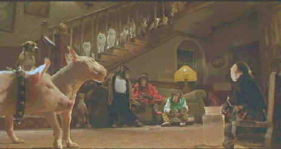

Universal/1998/95m/ANA 1.85, FS 1.33
 |
Babe leads the way©Universal |
Babe's world in this sequel is very artificial, more akin to Lady
and the Tramp than the very fine original pig opus. I don’t think it would play
as well as it does without having seen the first film. So much depends on knowing Babe's
history and character. Babe was a natural part of the farm world that introduced audiences
to him. His city existence is very much artificial. His adventures with the abandoned and
forlorn animals of the street is often overwrought with pathos and some of the scenes are
pretty intense for youngsters. The array of animals that look to Babe as a leader range
from orangutans and monkeys to dogs and cats and of course a loyal duck.
The animal special effects work looks brilliantly effortless.
It's hard to believe that these animals aren't chatty away loquaciously. Set design varies
in strange combinations of real, cartoon-like computer generations and theme park
fantasies. Photography is scrapbook fresh with compositions of great depth. Still, the
little details that made Babe so wonderful, like the Greek chorus of mice, are used
with tepid effect, almost as if the creators felt an obligation to include them again. I
also missed the nice interaction between Babe and Farmer Hoggett. There is no comparable
human relationship in Babe: Pig in the City.
George Miller who co-wrote and produced the first film
adds directing duties this time out. Miller keeps the action going fast and furious and
emphasizes the slapstick and the saccharine. Some sweetness has been left on the table
somewhere on the farm.
A truly gorgeous DVD with lush, saturated colors, Babe: Pig in
the City ranks as a reference to measure other DVDs against. Colors stand out
beautifully against one another. The distinct colors of the clothing worn by the monkeys
and orangutan and the pink of the poodle stand out against the backgrounds perfectly with
absolutely no bleeding. The image is penetratingly sharp without obvious edge enhancement.
The smallest details are realized with precision. Much of this Babe is dark
visually as well as spiritually and the contrast level are brilliantly executed. Every
crevice cast in shadow is easily discernable. The Dolby Digital 5:1 surround sound is very
directional. Sounds are located with precise accuracy. Pans from speaker to speaker are
seamless. This is a fabulous DVD in every regard.